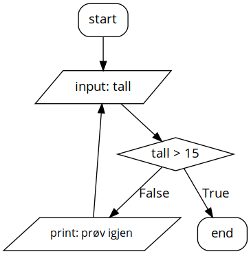
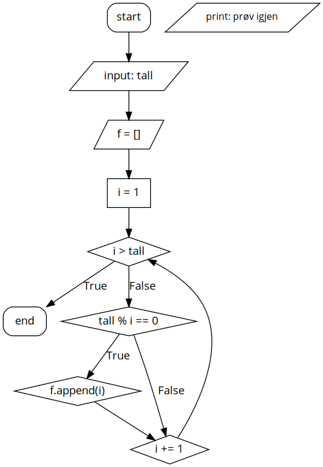

Økter
Innhold
uke 10
Prosjekt
Nytt prosjekt er omsider på plass. Du finner mer info om det her. Vi kommer til å bruke nogen lunde samme rammeverk for det siste prosjektet òg, altså en simulering i pygame.
Vurdering
Ifølge vurderingsplanen har vi satt av tid til vurdering onsdag om en uke, 13. mars. Denne kommer vi til å benytte oss av. Det blir en relativt enkel vurdering, som settes opp à la ukestestene fra i høst, bare at jeg denne gangen også går inn og ser på koden deres. Ting å forberede seg på:
- definerer funksjoner (Oppgavene tilhørende abstraksjon og programflyt (mer utfordrende))
while-løkker (Fra ett til hundre (siste oppgave))for-løkker
uke 5
Ball-simulering
Følg koden i denne nettsiden ved å skrive kode ordrett av. Pass på at koden kjører slik den er.
Jeg ønsker at du tenker over hva hver linje gjør idet du skriver den av, men du kan se bort fra å skulle beskrive «~class Ball():~»-blokken, og «~if name == "main":~»-blokken.
Forsøk så å legge til en endring av ballens hastighet ettersom simuleringen går. Dette er å gi ballen en akselerasjon.
uke 4
Asossiasjonslister – dictionaries
import math, numpy import pygame pygame.init() #>>> (6, 0) SAMPLERATE = 44100 def tone(freq=1000,volume=16000,length=1): num_steps = length*SAMPLERATE s = [] for n in range(num_steps): value = int(math.sin(n * freq * (6.28318/SAMPLERATE) * length)*volume) s.append( [value,value] ) x_arr = numpy.array(s, dtype='int8') return x_arr pygame.sndarray.make_sound(tone())
uke 3
Vi skal nå begynne med numerisk derivasjon og integrasjon, vi er da godt over i modelleringsbiten av faget.
Denne delen av faget blir ofte mer tydelig om vi har en god måte å visualisere det vi regner ut på. Dersom vi skal se på bokser som kolliderer med hverandre, er det greit faktisk å kunne se boksene. Til dette skal vi bruke spillbiblioteket pygame.
Installering
Åpne kommandolinja (Windows: windowstasten og skriv cmd. Mac: åpne terminal.). Når du er i kommandolinja, skriv pip install --user pygame. Deretter kan du åpne Spyder og følge tutorialen under.
Introduksjon til pygame
Som en introduksjon til pygame skal du følge tutorialen du finner her. Du kan starte under overskriften «The anatomy of a Pygame game». Følg tutorialen til bunnen av sida, altså hele «part 1».
Noe gikk ikke som det skulle
Finn meg i makerspacet på fredag, så skal jeg forsøke å hjelpe. Makerspacet er området vis-a-vis bordtennisen, inne i trearbeidsområdet.
Lykke til!
uke 46
Oppstartsoppgave Lag en funksjon som skriver ut første til hundrede kvadrattall.
Bruker:
- en for-løkke
- en funksjon
def kvadrer(n): """Kvadrerer tallet.""" return n ** 2 tallene = list(range(1, 101))
Ønsket oppførsel:
1 4 9 16 ... 10000
Mål for dagen Begynne med en kravspesifikasjon til programmet. Ett av kompetansemålene i faget er at du skal kunne
- omgjøre problemstillinger til konkrete delproblemer, vurdere hvilke av disse delproblemene som lar seg løse digitalt, og utforme løsninger for disse.
Du har nå valgt prosjektoppgave
print("hei")
uke 39
Oppstartsoppgave
Beskriv de ulike elementene av følgende program:
import math tallet = 42 skurten = math.sqrt(tallet)
Fjerde ord i en setning
Dere fikk en oppgave om å lage en funksjon som henter ut fjerde ord i en setning. La oss si funksjonen heter fjerde_ord, skal altså funkjsonen fungere på følgende måte:
>>> setningen = "Dette er en lang setning som har mange flere enn fire ord." >>> fjerde_ord(setningen) lang
Under kommer en definisjon som vil fungere for denne, så en forklaring på hva de ulike elementene er i denne definisjonen.
def fjerde_ord(setning): """Ta inn en teksstreng, `setning`, og returner det fjerde ordet i setningen.""" ord_i_liste = setning.split(" ") returverdi = ord_i_liste[3] return returverdi
Om vi forsøker å kalle denne funksjonen, som over, får vi altså:
setningen = "Dette er en lang setning som har mange flere enn fire ord." retur_av_funksjonskall = fjerde_ord(setningen) print(retur_av_funksjonskall)
lang
Vi går gjennom dette linje for linje.
def fjerde_ord(setning):
Her forteller vi at vi ønsker å definere en funksjon, som får navnet «~fjerdeord~», og som skal ta inn én parameter, som for resten av funksjonsdefinisjonen heter «~setning~».
De følgende linjene, som er rykket inn i forhold til definisjonssetningen, kaller vi funksjonskroppen, det er her vi sier hva funksjonen skal gjøre.
ord_i_i_liste = setning.split(" ")
Vi lager her en variabel som kun tilhører funksjonskroppen, som vi kaller ord_i_liste. Denne variabelen skal være en liste av alle ordene i tekststrengen som vi sendte til funksjonen, setning. For å få til dette, bruker vi listemetoden split. (Akkurat nå kan vi tenke på metoder som funksjoner som tilhører visse typer. Det gir mening å splitte opp en teksstreng, men det gir ikke mening å splitte opp et heltall.) Vi gjør dette ved å skrive setning.split(" "). Vi sier her «ta teksstrengen setning, og splitt denne opp til en liste, hvor du har splittet ved hvert mellomrom i setningen.
Hva tror oppdelt er etter linjene under?
sammensatt = """Dette er en lang, veldig lang, faktisk, setningen, med drøssevis av innskutte, på riktig måte, sjølsagt, leddsetninger.""" # Her har jeg brukt tre anførselstegn for å kunne å linjeskift i tekststrengen. oppdelt = sammensatt.split(",")
Vel, vi har altså nå en liste med ord, kalt ord_i_liste, som vi ønsker å hente ut det fjerde ordet fra. Vi trenger da å huske at lister en indeksert med null som første element i Python. Da er liste[0] det første elementet, liste[1] det andre, liste[2] det tredje og liste[3] det fjerde. Vi kunne nå helt fint ha sagt at returverdien til funksjonen skulle være ord_i_liste[3], ved bare å skrive
return ord_i_liste[3]
men jeg har her valgt å lage en returvariabel, kalt returverdi. De siste linjene i funksjonskroppen blir da
returverdi = ord_li_liste[3] return returverdi
Vi har nå laget en funksjon som oppfører seg på følgende måte:
Den neste utfordringen er da å finne ut hvordan vi skal kunne lage en funksjon som returnerer det n-te ordet i en setning.
uke 38
Oppstart prosjekt
- Bakgrunnsstoff 1: The Telegraph
- Bakgrunnsstoff 2: Berlingske
- Prosjektside: Twitter-boten
uke 37
Oppstartsoppgave 1
Hva gjør følgende program?

Oppstartsoppgave 2

Forventet status så langt
Enkel regning
Fagstoff: regnerekkefølge og kommandolinja
Oppgaver: Kortoppgaver
Bruk av variabler
Fagstoff: Variabler
if-setninger
Fagstoff: dersom … så …
Oppgaver: abc-formelen
Funksjoner
while-løkker
uke 36 avholdt PROPERTIES
:CUSTOMID: uke36 :header-args: :tangle ../py/uke36.py
Installering
- anaconda (noe som inneholder python, og litt ymse annet)
- pycharm (det dere skal bruke for å skrive python)
- git (versjonskontroll av kode)
Avansert print
Fra de fleste programmer ønsker vi en eller annen form for informasjon ut fra programmet. Dette kan være at programmet lager en graf for oss, at den skriver data til en fil, at interpreteren skriver svaret direkte på mellomregninger, eller at programmet skriver tilbake til kommandolinja.
Sistnevnte gjøres via funksjonen print.
print("Hei, verden!")
Det er heller ikke noe i veien for å kombinere printing med variabler.
a = 2 b = 3 c = a + b print("Summen av ", a, " og ", b, " er ", c, ".")
Dette kan fort bli en uhensiktsmessig måte å skrive ut svar på, så vi bruker heller den innebygde formateringen f-strenger.
print(f"Summen av {a} og {b} er {c}.")
f-strenger er særegent for Python, men andre språk har gjerne sine måter å formatere tekstrestrenger på. Dette er et kraftig verktøy, hvor vi har store muligheter for å formatere svarene våre på en hensiktsmessig måte.
Vi kan, eksempelvis, spesifisere hvor mange desimaler vi ønsker. (Setningen from math import pi¨ skal vi se i mye mer detalj på seinere.
from math import pi print(pi) print(f'pi skrevet med 5 gyldige siffer er {pi:.5}.')
Generelt kan vi spesifisere et tall som skal skrives ut ved å bruke tallets totale bredde og dets presisjon på en enkel måte med f-strenger.
bredde = 7 presisjon = 3 print(f'pi = {pi:{bredde}.{presisjon}}') print(f'pi = {pi:7.3}')
Boolske variable
En første løkke
Recap: if-setning
Skriv et program som tar inn et navn. Og bruker funksjonen len (f.eks. len("hei") # => 3)
Oppdrag Lag et program som ber brukeren om å taste inn navnet sitt, for så å skrive "Oi, det var langt" dersom navnet er på over 4 bokstaver.
- if-setning
inputprint
navn = input("Skriv navnet ditt: ") # trond lengde_navn = len(navn) # lengde_navn er nå 5 if lengde_navn > 3: print("Oi. Det var langt.")
langde_navn > 3 er her en test som enten gir True eller False.
Sammenlignere («comparitors»
a > b - a større enn b
a < b - a mindre enn b
a >= b - a større eller lik enn b
a <= b - a mindre enn eller lik enn b
a == b - a lik b
a != b - a ulik b
while-løkke
tall = 100 while tall >= 1: print(tall)
Siste operator
Kjør følgende linjer:
print(3 % 2) # => 1 print(5 % 7) # => 5 print(7 % 2) # => 1 print(9 % 3) # => 0 print(11 % 9) # => 2
Hva gjør %-operatoren?
Den gir resten etter et delestykke.
Utfordring
Programmet under skal kun skrive ut partall.
tall = 100 while tall >= 1: # Her setter dere inn noe tall = tall - 1
En løkkketype til
Installere git
Bruker hos bitbucket eller github
Lokal installasjon av git
Laste opp en enkelt-fil
konfigurer git til å bruke brukernavn og e-post du ønsker tilbakemeldinger over
Utfordring
Collatz' formodning fra [[promo.html#orgf0394fa][«boka»
uke 35 avholdt
Definere en funksjon
def f(x): """Et enkelt polynom.""" return x ** 2 + 5 * x - 4
print(f(2)) print(f(4)) print(f(-5))
10 32 -4
Åpningsoppgaver
Forklar operasjonen
Kjør følgende linjer i Python og beskriv hva som skjer:
2 // 3 4 // 5 5 // 5 7 // 7 8 // 7 10 // 3 0 // 4 12 // 4
Forklar hva funksjonene gjør
funk1(1, 4) # => 5 funk1(2, 2) # => 4 funk1(3, 5) # => 8 funk1(4, -6) # => -2
funk2(2, 4) # => 16 funk2(3, 3) # => 27 funk2(90, 0) # => 1
funk3(3) # => True funk3(2) # => False funk3(11) # => True funk3(1) # => True funk3(22) # => False
funk3(1) # => 1 funk3(2) # => 1 funk3(3) # => 2 funk3(5) # => 5 funk3(10) # => 55
Funksjoner
- bakgrunnsstoff
- Funksjoner
«Tallsjekkern»
Lag et program med følgende oppførsel:
- Be brukeren om et tall
- Skriv ut tallet brukeren ga
# Be brukeren om et tall tall = input("Skriv inn et tall:") # Endre 'tall' til ikke å være tekststreng tall = int(tall) # nå er det et heltall print("Du ga meg tallet: ", tall) if tall > 10: print("Oi. Det var stort!") print("Jeg er fortsatt i if-setninga.") else: print("Jøsses ... det var et bitte lite tall.")
Kvadratrøtter
import math # Alternativ 1 from math import sqrt # Alternativ 2 kvadratrot = math.sqrt(2) # Hvis alt. 1 kvadratrot = sqrt(2) # Hvis alt. 2 print(kvadratrot)
Oppgaver
if arbeid_så_langt == "altfor lett": # lag et program som ber brukern om tre tall (a, b, c) # og løser andregradslikningen a*x^2 + b*x + c = 0 elif arbeid_så_langt == "helt passe": # Lag nye programmer à la tallsjekkern.py hvor dere ber om input # og skriver ut noe basert på inputen. # Utfordring: Skriv ut om input var partall eller oddetall # (sjekk syntaksark ('y') i «boka» etter %-operator else: #altså alt er for vanskelig # Gå gjennom eksempler fra sist en gang til.n
Til neste gang, uke 36
Forsøk å fylle ut funksjonen under.
from math import sqrt def abc_loeser(a, b, c): """Denne funksjonen løser andregradslikningen: a x^2 + b x + c = 0 x1,2 = (-b +- sqrt(b^2 - 4ac) / 2a """ # Det som avgjør hvor mange løsninger vi har # er 'determinanten' d = b^2 - 4 a c # d > 0 : to løsninger # d == 0: en løsniong # d < 0 : ingen løsninger if d > 0: # gjør noe loesninger = "ett eller annet" elif d == 0: # gjør noe loesninger = "ett eller annet" else: # gjør noe loesninger = "ett eller annet" return loesninger
uke 34 avholdt
Introduksjon
- Se på https://tarjeiba.github.io/promo/promo.html#org99cf12d
- Hvis ikke python er lagt inn på maskinene. https://repl.it
Notater
print("Hello world!") # I Python, er #-tegnet mbrukt til kommentarer
print("Hello world!") hei = "Vær hilset!" # lagrer "vær hilset!" som variabel hei print(hei) # her er 'hei' et variabelnavn # Hvorfor gir print(hei) feil? # Datatyper a = 3 # heltall b = 3.1 # kommatall, flyttall c = "Dette er tekst" # teksstreng d = 'Dette er også en tekststreng' e = 'Dette er en tekststreng med "anførselstegn"' input("Det som skal stå på skjermen")
# Et program som dobler et tall tall = input("Gi meg et tall:") # tall er nå en tekststreng tall = float(tall) print("tall:", tall) print("Det dobbelte av tall er:") dobbelt = tall * 2 print(dobbelt)
3 ** 2 # 3^2
- Be om et navn, skriv ut "Hei på deg, {navn}" # Husk print("Hei på deg", navn)
- Be om ett tall, skriv ut tallet opphøyd i andre.
- Be om ett tall, skriv ut tre lavere enn tallet, så ganger to # Test med tall = 1 => -4
- Be om ett tall, skriv ut det dobbelte av tallet i fjerde
- Be om to tall, skriv ut summen av dem
- Be om to tall, skriv ut produktet av dem
- Be om to tall, skriv ut det første opphøyd i det andre